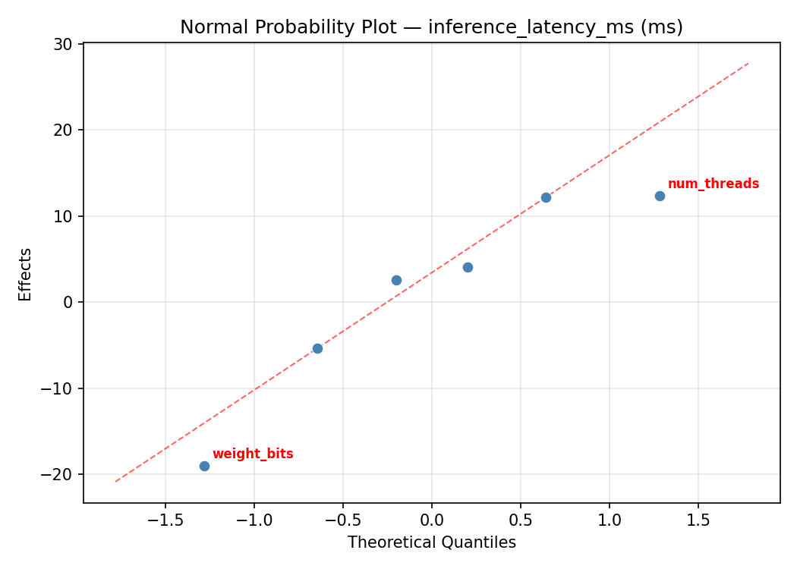
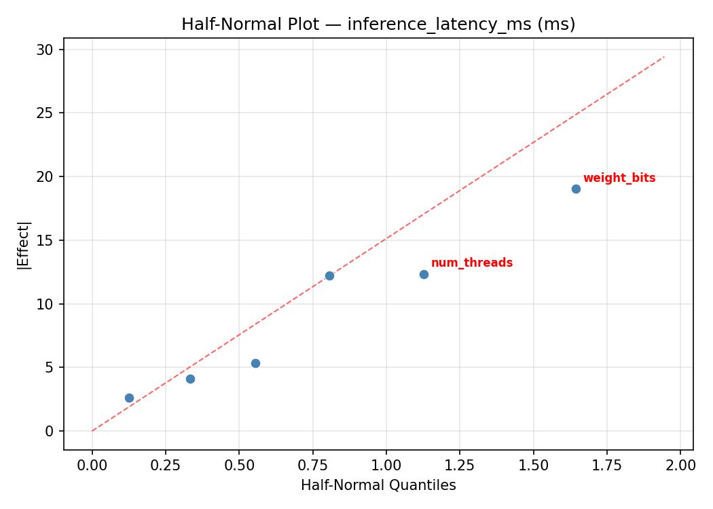
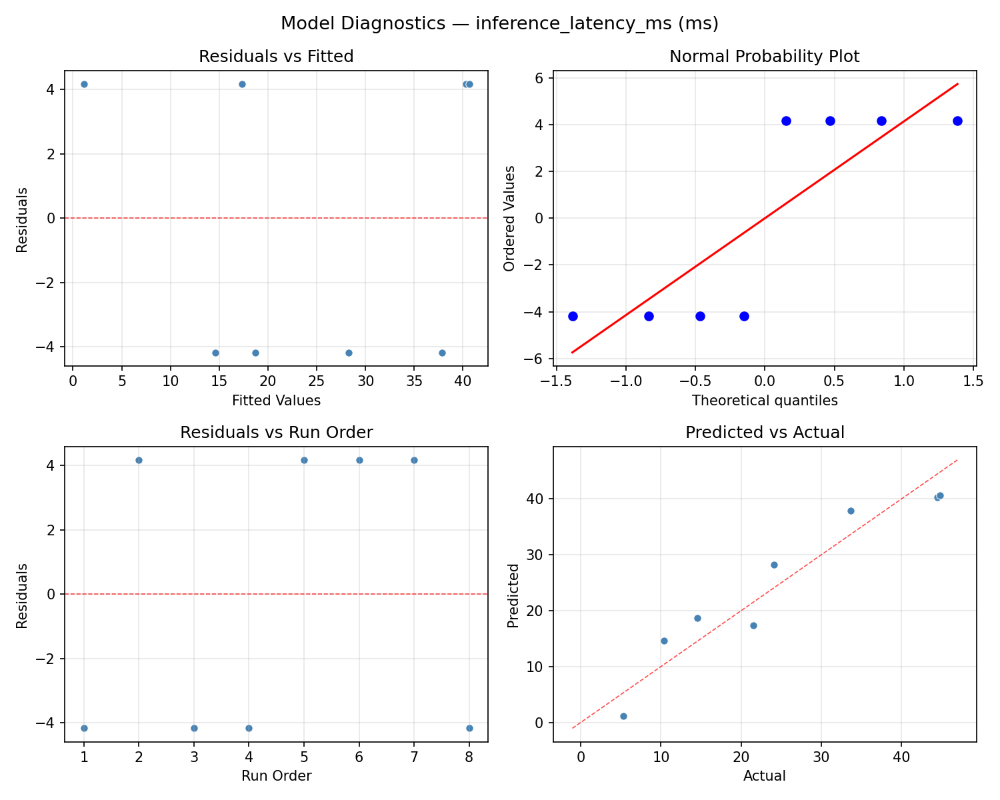
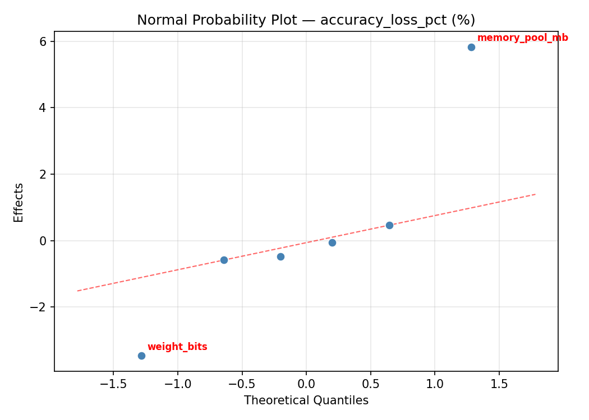
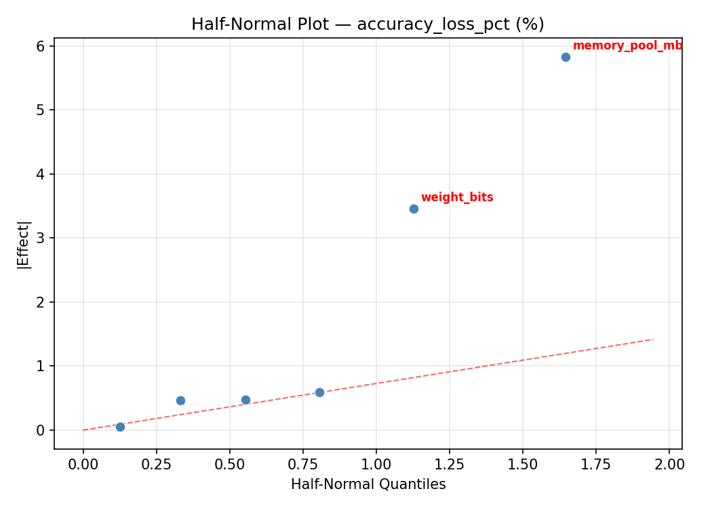
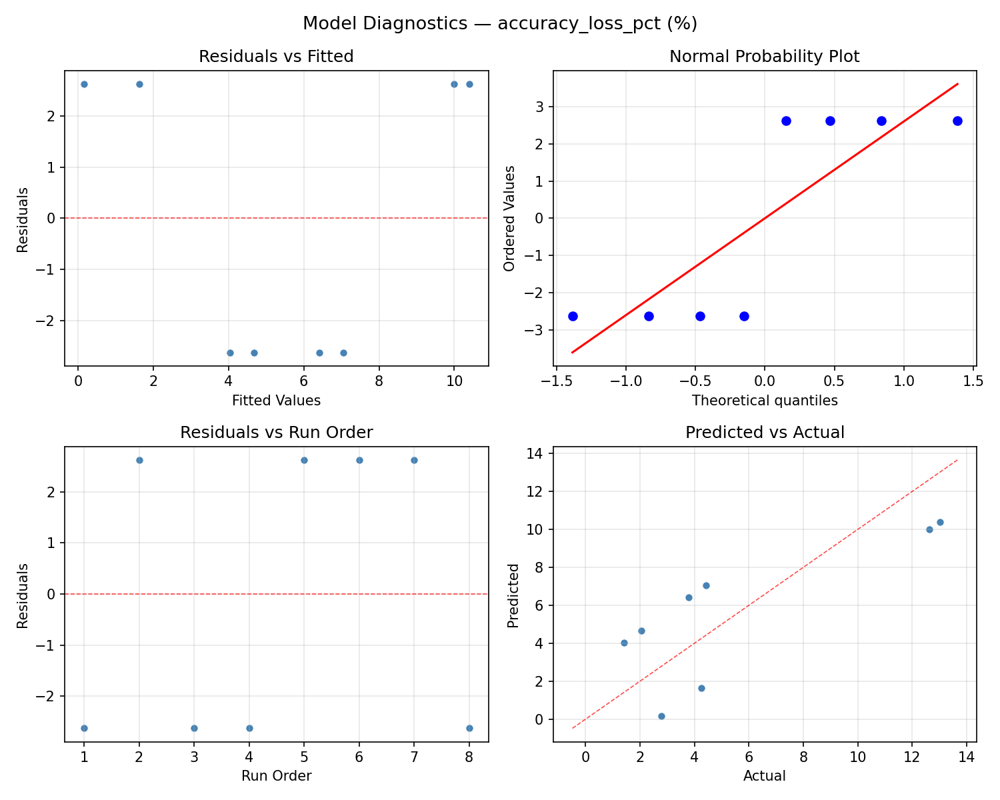

Summary
This experiment investigates edge inference quantization. Plackett-Burman screening of 6 edge ML inference parameters for latency and accuracy loss.
The design varies 6 factors: weight bits (bits), ranging from 4 to 16, activation bits (bits), ranging from 4 to 16, batch size (samples), ranging from 1 to 32, num threads (threads), ranging from 1 to 4, cache size kb (KB), ranging from 64 to 512, and memory pool mb (MB), ranging from 16 to 128. The goal is to optimize 2 responses: inference latency ms (ms) (minimize) and accuracy loss pct (%) (minimize). Fixed conditions held constant across all runs include framework = tflite, model = mobilenet_v2.
A Plackett-Burman screening design was used to efficiently test 6 factors in only 8 runs. This design assumes interactions are negligible and focuses on identifying the most influential main effects.
Key Findings
For inference latency ms, the most influential factors were num threads (44.2%), activation bits (27.9%), cache size kb (13.3%). The best observed value was 5.3 (at weight bits = 16, activation bits = 4, batch size = 1).
For accuracy loss pct, the most influential factors were memory pool mb (31.4%), num threads (28.7%), activation bits (25.4%). The best observed value was 1.42 (at weight bits = 16, activation bits = 16, batch size = 32).
Recommended Next Steps
- Follow up with a response surface design (CCD or Box-Behnken) on the top 3–4 factors to model curvature and find the true optimum.
- Consider whether any fixed factors should be varied in a future study.
- The screening results can guide factor reduction — drop factors contributing less than 5% and re-run with a smaller, more focused design.
Experimental Setup
Factors
| Factor | Low | High | Unit |
|---|
weight_bits | 4 | 16 | bits |
activation_bits | 4 | 16 | bits |
batch_size | 1 | 32 | samples |
num_threads | 1 | 4 | threads |
cache_size_kb | 64 | 512 | KB |
memory_pool_mb | 16 | 128 | MB |
Fixed: framework = tflite, model = mobilenet_v2
Responses
| Response | Direction | Unit |
|---|
inference_latency_ms | ↓ minimize | ms |
accuracy_loss_pct | ↓ minimize | % |
Configuration
{
"metadata": {
"name": "Edge Inference Quantization",
"description": "Plackett-Burman screening of 6 edge ML inference parameters for latency and accuracy loss"
},
"factors": [
{
"name": "weight_bits",
"levels": [
"4",
"16"
],
"type": "continuous",
"unit": "bits"
},
{
"name": "activation_bits",
"levels": [
"4",
"16"
],
"type": "continuous",
"unit": "bits"
},
{
"name": "batch_size",
"levels": [
"1",
"32"
],
"type": "continuous",
"unit": "samples"
},
{
"name": "num_threads",
"levels": [
"1",
"4"
],
"type": "continuous",
"unit": "threads"
},
{
"name": "cache_size_kb",
"levels": [
"64",
"512"
],
"type": "continuous",
"unit": "KB"
},
{
"name": "memory_pool_mb",
"levels": [
"16",
"128"
],
"type": "continuous",
"unit": "MB"
}
],
"fixed_factors": {
"framework": "tflite",
"model": "mobilenet_v2"
},
"responses": [
{
"name": "inference_latency_ms",
"optimize": "minimize",
"unit": "ms"
},
{
"name": "accuracy_loss_pct",
"optimize": "minimize",
"unit": "%"
}
],
"settings": {
"operation": "plackett_burman",
"test_script": "use_cases/71_edge_inference_quantization/sim.sh"
}
}
Experimental Matrix
The Plackett-Burman Design produces 8 runs. Each row is one experiment with specific factor settings.
| Run | weight_bits | activation_bits | batch_size | num_threads | cache_size_kb | memory_pool_mb |
|---|
| 1 | 16 | 16 | 32 | 1 | 64 | 16 |
| 2 | 4 | 4 | 32 | 4 | 64 | 16 |
| 3 | 4 | 16 | 1 | 4 | 64 | 128 |
| 4 | 16 | 16 | 32 | 4 | 512 | 128 |
| 5 | 4 | 16 | 1 | 1 | 512 | 16 |
| 6 | 16 | 4 | 1 | 4 | 512 | 16 |
| 7 | 4 | 4 | 32 | 1 | 512 | 128 |
| 8 | 16 | 4 | 1 | 1 | 64 | 128 |
Step-by-Step Workflow
1
Preview the design
$ python doe.py info --config use_cases/71_edge_inference_quantization/config.json
2
Generate the runner script
$ python doe.py generate --config use_cases/71_edge_inference_quantization/config.json \
--output use_cases/71_edge_inference_quantization/results/run.sh --seed 42
3
Execute the experiments
$ bash use_cases/71_edge_inference_quantization/results/run.sh
4
Analyze results
$ python doe.py analyze --config use_cases/71_edge_inference_quantization/config.json
5
Get optimization recommendations
$ python doe.py optimize --config use_cases/71_edge_inference_quantization/config.json
6
Multi-objective optimization
With 2 competing responses, use --multi to find the best compromise via Derringer–Suich desirability.
$ python doe.py optimize --config use_cases/71_edge_inference_quantization/config.json --multi
7
Generate the HTML report
$ python doe.py report --config use_cases/71_edge_inference_quantization/config.json \
--output use_cases/71_edge_inference_quantization/results/report.html
Features Exercised
| Feature | Value |
|---|
| Design type | plackett_burman |
| Factor types | continuous (all 6) |
| Arg style | double-dash |
| Responses | 2 (inference_latency_ms ↓, accuracy_loss_pct ↓) |
| Total runs | 8 |
Analysis Results
Generated from actual experiment runs using the DOE Helper Tool.
Response: inference_latency_ms
Top factors: num_threads (44.2%), activation_bits (27.9%), cache_size_kb (13.3%).
ANOVA
| Source | DF | SS | MS | F | p-value |
|---|
| Source | DF | SS | MS | F | p-value |
| weight_bits | 1 | 0.6050 | 0.6050 | 0.026 | 0.8771 |
| activation_bits | 1 | 406.1250 | 406.1250 | 17.267 | 0.0043 |
| batch_size | 1 | 33.6200 | 33.6200 | 1.429 | 0.2708 |
| num_threads | 1 | 1017.0050 | 1017.0050 | 43.240 | 0.0003 |
| cache_size_kb | 1 | 92.4800 | 92.4800 | 3.932 | 0.0878 |
| memory_pool_mb | 1 | 15.6800 | 15.6800 | 0.667 | 0.4411 |
| weight_bits*activation_bits | 1 | 33.6200 | 33.6200 | 1.429 | 0.2708 |
| weight_bits*batch_size | 1 | 406.1250 | 406.1250 | 17.267 | 0.0043 |
| weight_bits*num_threads | 1 | 92.4800 | 92.4800 | 3.932 | 0.0878 |
| weight_bits*cache_size_kb | 1 | 1017.0050 | 1017.0050 | 43.240 | 0.0003 |
| weight_bits*memory_pool_mb | 1 | 6.8450 | 6.8450 | 0.291 | 0.6063 |
| activation_bits*batch_size | 1 | 0.6050 | 0.6050 | 0.026 | 0.8771 |
| activation_bits*num_threads | 1 | 15.6800 | 15.6800 | 0.667 | 0.4411 |
| activation_bits*cache_size_kb | 1 | 6.8450 | 6.8450 | 0.291 | 0.6063 |
| activation_bits*memory_pool_mb | 1 | 1017.0050 | 1017.0050 | 43.240 | 0.0003 |
| batch_size*num_threads | 1 | 6.8450 | 6.8450 | 0.291 | 0.6063 |
| batch_size*cache_size_kb | 1 | 15.6800 | 15.6800 | 0.667 | 0.4411 |
| batch_size*memory_pool_mb | 1 | 92.4800 | 92.4800 | 3.932 | 0.0878 |
| num_threads*cache_size_kb | 1 | 0.6050 | 0.6050 | 0.026 | 0.8771 |
| num_threads*memory_pool_mb | 1 | 406.1250 | 406.1250 | 17.267 | 0.0043 |
| cache_size_kb*memory_pool_mb | 1 | 33.6200 | 33.6200 | 1.429 | 0.2708 |
| Error | (Lenth | PSE) | 7 | 164.6400 | 23.5200 |
| Total | 7 | 1572.3600 | 224.6229 | | |
Pareto Chart

Main Effects Plot

Normal Probability Plot of Effects

Half-Normal Plot of Effects

Model Diagnostics

Response: accuracy_loss_pct
Top factors: memory_pool_mb (31.4%), num_threads (28.7%), activation_bits (25.4%).
ANOVA
| Source | DF | SS | MS | F | p-value |
|---|
| Source | DF | SS | MS | F | p-value |
| weight_bits | 1 | 4.2195 | 4.2195 | 2.833 | 0.1362 |
| activation_bits | 1 | 37.4545 | 37.4545 | 25.150 | 0.0015 |
| batch_size | 1 | 0.4465 | 0.4465 | 0.300 | 0.6010 |
| num_threads | 1 | 47.6776 | 47.6776 | 32.015 | 0.0008 |
| cache_size_kb | 1 | 0.5995 | 0.5995 | 0.403 | 0.5459 |
| memory_pool_mb | 1 | 56.9778 | 56.9778 | 38.260 | 0.0005 |
| weight_bits*activation_bits | 1 | 0.4465 | 0.4465 | 0.300 | 0.6010 |
| weight_bits*batch_size | 1 | 37.4545 | 37.4545 | 25.150 | 0.0015 |
| weight_bits*num_threads | 1 | 0.5995 | 0.5995 | 0.403 | 0.5459 |
| weight_bits*cache_size_kb | 1 | 47.6776 | 47.6776 | 32.015 | 0.0008 |
| weight_bits*memory_pool_mb | 1 | 1.3861 | 1.3861 | 0.931 | 0.3668 |
| activation_bits*batch_size | 1 | 4.2195 | 4.2195 | 2.833 | 0.1362 |
| activation_bits*num_threads | 1 | 56.9778 | 56.9778 | 38.260 | 0.0005 |
| activation_bits*cache_size_kb | 1 | 1.3861 | 1.3861 | 0.931 | 0.3668 |
| activation_bits*memory_pool_mb | 1 | 47.6776 | 47.6776 | 32.015 | 0.0008 |
| batch_size*num_threads | 1 | 1.3861 | 1.3861 | 0.931 | 0.3668 |
| batch_size*cache_size_kb | 1 | 56.9778 | 56.9778 | 38.260 | 0.0005 |
| batch_size*memory_pool_mb | 1 | 0.5995 | 0.5995 | 0.403 | 0.5459 |
| num_threads*cache_size_kb | 1 | 4.2195 | 4.2195 | 2.833 | 0.1362 |
| num_threads*memory_pool_mb | 1 | 37.4545 | 37.4545 | 25.150 | 0.0015 |
| cache_size_kb*memory_pool_mb | 1 | 0.4465 | 0.4465 | 0.300 | 0.6010 |
| Error | (Lenth | PSE) | 7 | 10.4245 | 1.4892 |
| Total | 7 | 148.7616 | 21.2517 | | |
Pareto Chart

Main Effects Plot

Normal Probability Plot of Effects

Half-Normal Plot of Effects

Model Diagnostics

Response Surface Plots
3D surfaces fitted with quadratic RSM. Red dots are observed data points.
accuracy loss pct activation bits vs batch size

accuracy loss pct activation bits vs cache size kb

accuracy loss pct activation bits vs memory pool mb

accuracy loss pct activation bits vs num threads

accuracy loss pct batch size vs cache size kb

accuracy loss pct batch size vs memory pool mb

accuracy loss pct batch size vs num threads

accuracy loss pct cache size kb vs memory pool mb

accuracy loss pct num threads vs cache size kb

accuracy loss pct num threads vs memory pool mb

accuracy loss pct weight bits vs activation bits

accuracy loss pct weight bits vs batch size

accuracy loss pct weight bits vs cache size kb

accuracy loss pct weight bits vs memory pool mb

accuracy loss pct weight bits vs num threads

inference latency ms activation bits vs batch size

inference latency ms activation bits vs cache size kb

inference latency ms activation bits vs memory pool mb

inference latency ms activation bits vs num threads

inference latency ms batch size vs cache size kb

inference latency ms batch size vs memory pool mb

inference latency ms batch size vs num threads

inference latency ms cache size kb vs memory pool mb

inference latency ms num threads vs cache size kb

inference latency ms num threads vs memory pool mb

inference latency ms weight bits vs activation bits

inference latency ms weight bits vs batch size

inference latency ms weight bits vs cache size kb

inference latency ms weight bits vs memory pool mb

inference latency ms weight bits vs num threads

Multi-Objective Optimization
When responses compete, Derringer–Suich desirability finds the best compromise.
Each response is scaled to a 0–1 desirability, then combined via a weighted geometric mean.
Overall Desirability
D = 1.0000
Per-Response Desirability
| Response | Weight | Desirability | Predicted | Dir |
|---|
inference_latency_ms |
1.0 |
|
2.29 1.0000 2.29 ms |
↓ |
accuracy_loss_pct |
1.5 |
|
-0.38 1.0000 -0.38 % |
↓ |
Recommended Settings
| Factor | Value |
|---|
weight_bits | 5.363 bits |
activation_bits | 14.97 bits |
batch_size | 5.221 samples |
num_threads | 3.976 threads |
cache_size_kb | 310.7 KB |
memory_pool_mb | 19.78 MB |
Source: from RSM model prediction
Trade-off Summary
Sacrifice = how much worse than single-objective best.
| Response | Predicted | Best Observed | Sacrifice |
|---|
accuracy_loss_pct | -0.38 | 1.42 | -1.80 |
Top 3 Runs by Desirability
| Run | D | Factor Settings |
|---|
| #4 | 0.8634 | weight_bits=16, activation_bits=16, batch_size=32, num_threads=4, cache_size_kb=512, memory_pool_mb=128 |
| #3 | 0.7639 | weight_bits=16, activation_bits=4, batch_size=1, num_threads=4, cache_size_kb=512, memory_pool_mb=16 |
Model Quality
| Response | R² | Type |
|---|
accuracy_loss_pct | 0.9997 | linear |
Full Multi-Objective Output
============================================================
MULTI-OBJECTIVE OPTIMIZATION
Method: Derringer-Suich Desirability Function
============================================================
Overall desirability: D = 1.0000
Response Weight Desirability Predicted Direction
---------------------------------------------------------------------
inference_latency_ms 1.0 1.0000 2.29 ms ↓
accuracy_loss_pct 1.5 1.0000 -0.38 % ↓
Recommended settings:
weight_bits = 5.363 bits
activation_bits = 14.97 bits
batch_size = 5.221 samples
num_threads = 3.976 threads
cache_size_kb = 310.7 KB
memory_pool_mb = 19.78 MB
(from RSM model prediction)
Trade-off summary:
inference_latency_ms: 2.29 (best observed: 5.30, sacrifice: -3.01)
accuracy_loss_pct: -0.38 (best observed: 1.42, sacrifice: -1.80)
Model quality:
inference_latency_ms: R² = 0.9904 (linear)
accuracy_loss_pct: R² = 0.9997 (linear)
Top 3 observed runs by overall desirability:
1. Run #6 (D=0.8886): weight_bits=4, activation_bits=16, batch_size=1, num_threads=4, cache_size_kb=64, memory_pool_mb=128
2. Run #4 (D=0.8634): weight_bits=16, activation_bits=16, batch_size=32, num_threads=4, cache_size_kb=512, memory_pool_mb=128
3. Run #3 (D=0.7639): weight_bits=16, activation_bits=4, batch_size=1, num_threads=4, cache_size_kb=512, memory_pool_mb=16
Full Analysis Output
=== Main Effects: inference_latency_ms ===
Factor Effect Std Error % Contribution
--------------------------------------------------------------
num_threads 22.5500 5.2989 44.2%
activation_bits -14.2500 5.2989 27.9%
cache_size_kb 6.8000 5.2989 13.3%
batch_size 4.1000 5.2989 8.0%
memory_pool_mb -2.8000 5.2989 5.5%
weight_bits -0.5500 5.2989 1.1%
=== ANOVA Table: inference_latency_ms ===
Source DF SS MS F p-value
-----------------------------------------------------------------------------
weight_bits 1 0.6050 0.6050 0.026 0.8771
activation_bits 1 406.1250 406.1250 17.267 0.0043
batch_size 1 33.6200 33.6200 1.429 0.2708
num_threads 1 1017.0050 1017.0050 43.240 0.0003
cache_size_kb 1 92.4800 92.4800 3.932 0.0878
memory_pool_mb 1 15.6800 15.6800 0.667 0.4411
weight_bits*activation_bits 1 33.6200 33.6200 1.429 0.2708
weight_bits*batch_size 1 406.1250 406.1250 17.267 0.0043
weight_bits*num_threads 1 92.4800 92.4800 3.932 0.0878
weight_bits*cache_size_kb 1 1017.0050 1017.0050 43.240 0.0003
weight_bits*memory_pool_mb 1 6.8450 6.8450 0.291 0.6063
activation_bits*batch_size 1 0.6050 0.6050 0.026 0.8771
activation_bits*num_threads 1 15.6800 15.6800 0.667 0.4411
activation_bits*cache_size_kb 1 6.8450 6.8450 0.291 0.6063
activation_bits*memory_pool_mb 1 1017.0050 1017.0050 43.240 0.0003
batch_size*num_threads 1 6.8450 6.8450 0.291 0.6063
batch_size*cache_size_kb 1 15.6800 15.6800 0.667 0.4411
batch_size*memory_pool_mb 1 92.4800 92.4800 3.932 0.0878
num_threads*cache_size_kb 1 0.6050 0.6050 0.026 0.8771
num_threads*memory_pool_mb 1 406.1250 406.1250 17.267 0.0043
cache_size_kb*memory_pool_mb 1 33.6200 33.6200 1.429 0.2708
Error (Lenth PSE) 7 164.6400 23.5200
Total 7 1572.3600 224.6229
Note: Error estimated using Lenth's pseudo-standard-error (unreplicated design)
=== Interaction Effects: inference_latency_ms ===
Factor A Factor B Interaction % Contribution
------------------------------------------------------------------------
weight_bits cache_size_kb 22.5500 20.9%
activation_bits memory_pool_mb 22.5500 20.9%
weight_bits batch_size -14.2500 13.2%
num_threads memory_pool_mb -14.2500 13.2%
weight_bits num_threads 6.8000 6.3%
batch_size memory_pool_mb 6.8000 6.3%
weight_bits activation_bits 4.1000 3.8%
cache_size_kb memory_pool_mb 4.1000 3.8%
activation_bits num_threads -2.8000 2.6%
batch_size cache_size_kb -2.8000 2.6%
weight_bits memory_pool_mb 1.8500 1.7%
activation_bits cache_size_kb 1.8500 1.7%
batch_size num_threads 1.8500 1.7%
activation_bits batch_size -0.5500 0.5%
num_threads cache_size_kb -0.5500 0.5%
=== Summary Statistics: inference_latency_ms ===
weight_bits:
Level N Mean Std Min Max
------------------------------------------------------------
16 4 25.1250 14.2174 10.4000 44.5000
4 4 24.5750 17.9383 5.3000 44.8000
activation_bits:
Level N Mean Std Min Max
------------------------------------------------------------
16 4 31.9750 15.1520 14.5000 44.8000
4 4 17.7250 12.6160 5.3000 33.7000
batch_size:
Level N Mean Std Min Max
------------------------------------------------------------
1 4 22.8000 15.3660 10.4000 44.8000
32 4 26.9000 16.6373 5.3000 44.5000
num_threads:
Level N Mean Std Min Max
------------------------------------------------------------
1 4 13.5750 7.9622 5.3000 24.1000
4 4 36.1250 11.0328 21.5000 44.8000
cache_size_kb:
Level N Mean Std Min Max
------------------------------------------------------------
512 4 21.4500 16.7375 5.3000 44.5000
64 4 28.2500 14.5997 10.4000 44.8000
memory_pool_mb:
Level N Mean Std Min Max
------------------------------------------------------------
128 4 26.2500 21.3486 5.3000 44.8000
16 4 23.4500 7.9454 14.5000 33.7000
=== Main Effects: accuracy_loss_pct ===
Factor Effect Std Error % Contribution
--------------------------------------------------------------
memory_pool_mb -5.3375 1.6299 31.4%
num_threads 4.8825 1.6299 28.7%
activation_bits -4.3275 1.6299 25.4%
weight_bits -1.4525 1.6299 8.5%
cache_size_kb 0.5475 1.6299 3.2%
batch_size -0.4725 1.6299 2.8%
=== ANOVA Table: accuracy_loss_pct ===
Source DF SS MS F p-value
-----------------------------------------------------------------------------
weight_bits 1 4.2195 4.2195 2.833 0.1362
activation_bits 1 37.4545 37.4545 25.150 0.0015
batch_size 1 0.4465 0.4465 0.300 0.6010
num_threads 1 47.6776 47.6776 32.015 0.0008
cache_size_kb 1 0.5995 0.5995 0.403 0.5459
memory_pool_mb 1 56.9778 56.9778 38.260 0.0005
weight_bits*activation_bits 1 0.4465 0.4465 0.300 0.6010
weight_bits*batch_size 1 37.4545 37.4545 25.150 0.0015
weight_bits*num_threads 1 0.5995 0.5995 0.403 0.5459
weight_bits*cache_size_kb 1 47.6776 47.6776 32.015 0.0008
weight_bits*memory_pool_mb 1 1.3861 1.3861 0.931 0.3668
activation_bits*batch_size 1 4.2195 4.2195 2.833 0.1362
activation_bits*num_threads 1 56.9778 56.9778 38.260 0.0005
activation_bits*cache_size_kb 1 1.3861 1.3861 0.931 0.3668
activation_bits*memory_pool_mb 1 47.6776 47.6776 32.015 0.0008
batch_size*num_threads 1 1.3861 1.3861 0.931 0.3668
batch_size*cache_size_kb 1 56.9778 56.9778 38.260 0.0005
batch_size*memory_pool_mb 1 0.5995 0.5995 0.403 0.5459
num_threads*cache_size_kb 1 4.2195 4.2195 2.833 0.1362
num_threads*memory_pool_mb 1 37.4545 37.4545 25.150 0.0015
cache_size_kb*memory_pool_mb 1 0.4465 0.4465 0.300 0.6010
Error (Lenth PSE) 7 10.4245 1.4892
Total 7 148.7616 21.2517
Note: Error estimated using Lenth's pseudo-standard-error (unreplicated design)
=== Interaction Effects: accuracy_loss_pct ===
Factor A Factor B Interaction % Contribution
------------------------------------------------------------------------
activation_bits num_threads -5.3375 14.6%
batch_size cache_size_kb -5.3375 14.6%
weight_bits cache_size_kb 4.8825 13.4%
activation_bits memory_pool_mb 4.8825 13.4%
weight_bits batch_size -4.3275 11.8%
num_threads memory_pool_mb -4.3275 11.8%
activation_bits batch_size -1.4525 4.0%
num_threads cache_size_kb -1.4525 4.0%
weight_bits memory_pool_mb -0.8325 2.3%
activation_bits cache_size_kb -0.8325 2.3%
batch_size num_threads -0.8325 2.3%
weight_bits num_threads 0.5475 1.5%
batch_size memory_pool_mb 0.5475 1.5%
weight_bits activation_bits -0.4725 1.3%
cache_size_kb memory_pool_mb -0.4725 1.3%
=== Summary Statistics: accuracy_loss_pct ===
weight_bits:
Level N Mean Std Min Max
------------------------------------------------------------
16 4 6.2725 4.2406 3.7800 12.6200
4 4 4.8200 5.4953 1.4200 13.0200
activation_bits:
Level N Mean Std Min Max
------------------------------------------------------------
16 4 7.7100 5.9809 1.4200 13.0200
4 4 3.3825 1.1538 2.0500 4.4300
batch_size:
Level N Mean Std Min Max
------------------------------------------------------------
1 4 5.7825 5.0186 1.4200 13.0200
32 4 5.3100 4.9246 2.0500 12.6200
num_threads:
Level N Mean Std Min Max
------------------------------------------------------------
1 4 3.1050 1.3102 1.4200 4.4300
4 4 7.9875 5.6549 2.0500 13.0200
cache_size_kb:
Level N Mean Std Min Max
------------------------------------------------------------
512 4 5.2725 5.0337 1.4200 12.6200
64 4 5.8200 4.9040 2.0500 13.0200
memory_pool_mb:
Level N Mean Std Min Max
------------------------------------------------------------
128 4 8.2150 5.3619 2.7900 13.0200
16 4 2.8775 1.3583 1.4200 4.2600
Optimization Recommendations
=== Optimization: inference_latency_ms ===
Direction: minimize
Best observed run: #6
weight_bits = 16
activation_bits = 4
batch_size = 1
num_threads = 4
cache_size_kb = 512
memory_pool_mb = 16
Value: 5.3
RSM Model (linear, R² = 0.7867, Adj R² = -0.4932):
Coefficients:
intercept +24.8500
weight_bits -0.2750
activation_bits -4.8250
batch_size +4.3500
num_threads -6.1750
cache_size_kb -8.5000
memory_pool_mb -1.4000
Predicted optimum (from linear model, at observed points):
weight_bits = 16
activation_bits = 16
batch_size = 32
num_threads = 1
cache_size_kb = 64
memory_pool_mb = 16
Predicted value: 40.1750
Surface optimum (via L-BFGS-B, linear model):
weight_bits = 16
activation_bits = 16
batch_size = 1
num_threads = 4
cache_size_kb = 512
memory_pool_mb = 128
Predicted value: -0.6750
Model quality: Good fit — general trends are captured, some noise remains.
Factor importance:
1. cache_size_kb (effect: 17.0, contribution: 33.3%)
2. num_threads (effect: -12.3, contribution: 24.2%)
3. activation_bits (effect: 9.6, contribution: 18.9%)
4. batch_size (effect: 8.7, contribution: 17.0%)
5. memory_pool_mb (effect: 2.8, contribution: 5.5%)
6. weight_bits (effect: 0.6, contribution: 1.1%)
=== Optimization: accuracy_loss_pct ===
Direction: minimize
Best observed run: #4
weight_bits = 16
activation_bits = 16
batch_size = 32
num_threads = 4
cache_size_kb = 512
memory_pool_mb = 128
Value: 1.42
RSM Model (linear, R² = 0.7195, Adj R² = -0.9633):
Coefficients:
intercept +5.5462
weight_bits -0.7263
activation_bits -2.5063
batch_size -0.5788
num_threads -0.2313
cache_size_kb -2.4838
memory_pool_mb +0.1163
Predicted optimum (from linear model, at observed points):
weight_bits = 16
activation_bits = 4
batch_size = 1
num_threads = 1
cache_size_kb = 64
memory_pool_mb = 128
Predicted value: 10.7363
Surface optimum (via L-BFGS-B, linear model):
weight_bits = 16
activation_bits = 16
batch_size = 32
num_threads = 4
cache_size_kb = 512
memory_pool_mb = 16
Predicted value: -1.0963
Model quality: Good fit — general trends are captured, some noise remains.
Factor importance:
1. activation_bits (effect: 5.0, contribution: 37.7%)
2. cache_size_kb (effect: 5.0, contribution: 37.4%)
3. weight_bits (effect: 1.5, contribution: 10.9%)
4. batch_size (effect: -1.2, contribution: 8.7%)
5. num_threads (effect: -0.5, contribution: 3.5%)
6. memory_pool_mb (effect: -0.2, contribution: 1.8%)